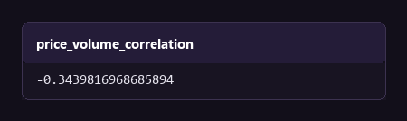
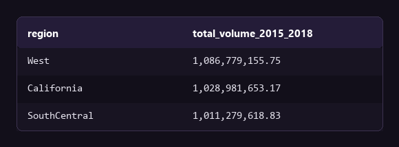
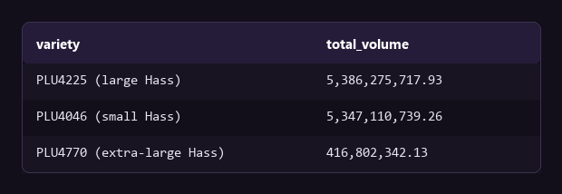
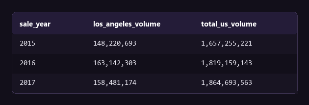

Case description
Weekly Hass avocado sales data from 2015 to 2018: average price, total volume, and volume by PLU code (small, large, and extra-large) across U.S. regions. The data is loaded into PostgreSQL and queried directly.
Does price change volume?
The usual hypothesis is that a higher price gives lower sales. I test it first, because a weak relation means price is the wrong control to use.

Query
SELECT CORR(average_price, total_volume) AS price_volume_correlation
FROM avocado_prices
WHERE region <> 'TotalUS';The correlation is -0.34. Price and volume move in opposite directions, but the relation is weak. Other causes, such as promotions, seasons, and competing produce, have more effect than price. A price change is therefore not a reliable method to control volume.
Which regions carry the volume?
Regions do not buy equally. The location of the volume decides where the distribution and marketing budget goes first.

Query
SELECT region, SUM(total_volume) AS total_volume_2015_2018
FROM avocado_prices
WHERE region <> 'TotalUS'
GROUP BY region ORDER BY total_volume_2015_2018 DESC LIMIT 10;West, California, and SouthCentral lead, and they are within 7% of each other. No region dominates. Demand is distributed, so the regional concentration risk is low.
Which size sells most?
A supplier can assume that small avocados are the safe default order. The data must confirm that assumption before it becomes a purchasing rule.

Query
SELECT 'PLU4046 (small)' AS variety, SUM(plu4046) AS total_volume FROM avocado_prices
UNION ALL SELECT 'PLU4225 (large)', SUM(plu4225) FROM avocado_prices
UNION ALL SELECT 'PLU4770 (extra-large)', SUM(plu4770) FROM avocado_prices
ORDER BY total_volume DESC;Large Hass (PLU4225) is less than 1% above small Hass (PLU4046). Both are far above extra-large. The difference is too small to give a default size. A supplier that orders only small avocados ignores almost half of the demand.
Does Los Angeles follow the national trend?
If a large city moves independently of the national figure, national trends are not a valid basis to plan for that city.

Query
SELECT sale_year,
SUM(CASE WHEN region = 'LosAngeles' THEN total_volume END) AS los_angeles_volume,
SUM(CASE WHEN region = 'TotalUS' THEN total_volume END) AS total_us_volume
FROM avocado_prices
WHERE region IN ('LosAngeles', 'TotalUS')
GROUP BY sale_year ORDER BY sale_year;Los Angeles holds a stable share near 8.9% of national volume in the three full years, 2015 to 2017. It follows the national trend closely, so national forecasts are sufficient for Los Angeles. A separate regional model is not necessary.
Bottom line
Price is a weak control on volume, at a correlation of -0.34. A price change alone does not deliver a volume target, so promotions and seasonal supply need the attention first.
The demand is stable and distributed. West, California, and SouthCentral are within 7% of each other, and Los Angeles holds a steady 8.9% share of national volume. National forecasts are therefore sufficient for those markets. On purchasing, large and small Hass are less than 1% apart, so an order of only small fruit ignores almost half of the demand.